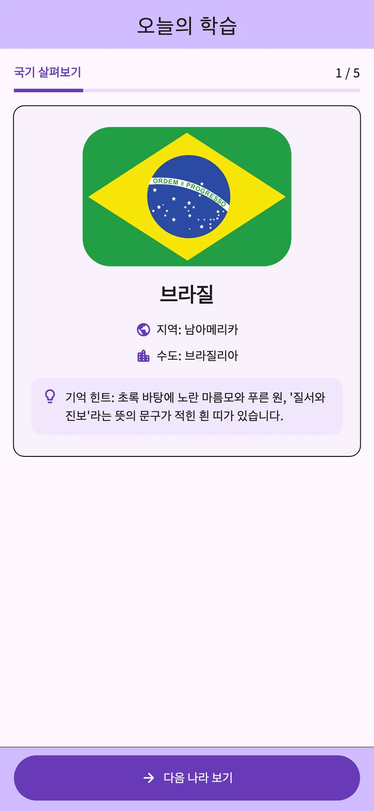
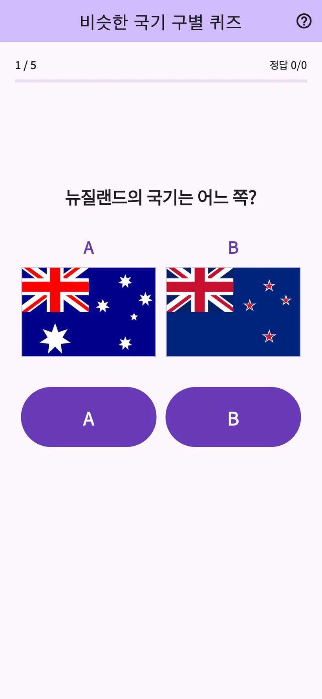
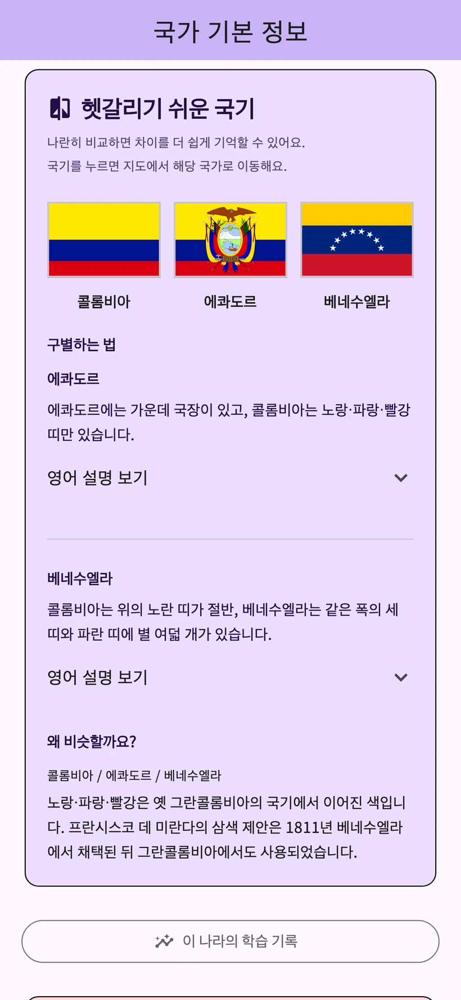
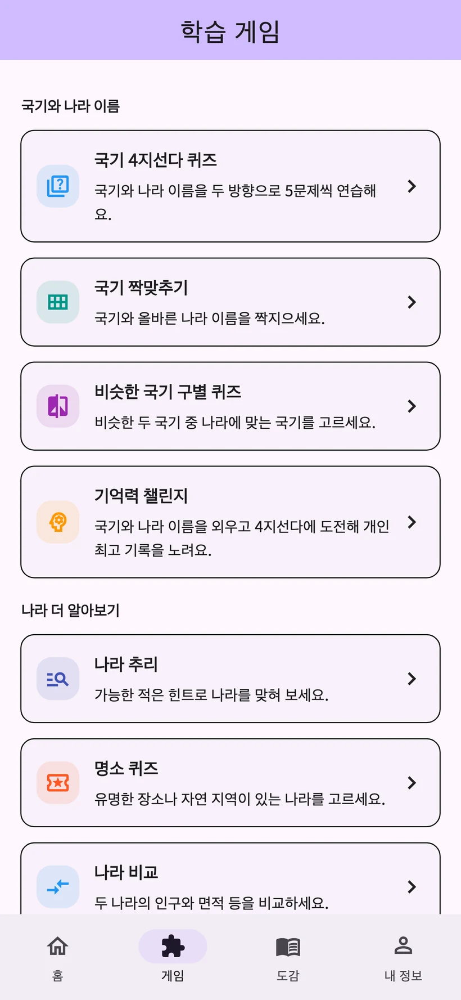

01
국기 4지선다 퀴즈
국기에 맞는 나라 이름이나 나라 이름에 맞는 국기를 골라요.
국기 암기 퀴즈 아와아와팡
206개 국가·지역의 국기와 수도를 배우는 앱이에요.
매일 학습과 8가지 게임으로 배운 내용을 확인할 수 있어요.
iPhone·Android / 무료 다운로드 · 앱 내 구입 제공


실제 앱 화면
국기와 나라 이름을 하나씩 배우고 퀴즈로 확인해요. 학습 기록에 맞춰 복습할 수 있어요.
기록 화면은 예시 데이터입니다. 상세 학습 분석은 STUDY PLUS에서 이용할 수 있어요.
색과 무늬를 비교하며 차이를 배울 수 있어요. 프랑스와 이탈리아 국기로 먼저 해 보세요.
국기를 구별하는 방법을 체험하는 웹 예제입니다. 앱 화면과는 다릅니다.
국기와 나라 이름부터 명소와 이웃 나라까지 배우고 싶은 주제에 맞춰 게임을 고를 수 있어요.
국기에 맞는 나라 이름이나 나라 이름에 맞는 국기를 골라요.
국기와 올바른 나라 이름을 선으로 연결해요.
비슷한 국기 두 장 중에서 정답을 골라요.
국기와 나라 이름을 기억한 뒤 객관식 문제를 풀어요.
차례로 나오는 힌트를 보고 나라를 맞혀요.
명소나 자연유산이 있는 나라를 맞혀요.
두 나라의 인구와 면적 등을 비교해요.
육지로 국경을 맞댄 나라를 골라요.


206개 국가·지역의 국기, 수도, 지도, 유래와 문화. 퀴즈에서 궁금했던 나라를 바로 살펴보세요.
출신 국가·지역의 문화와 추천을 소개해요. 이용자 게시글은 번역과 운영자 검토 후 공개되어 지원 언어로 읽을 수 있어요.
나라 이야기의 닉네임은 선택 사항입니다. 게시글을 신고하거나 숨길 수 있어요. YouTube 동영상은 외부에서 열립니다.
매일 학습
이용 가능한 보상형 동영상 광고를 보면 선택한 항목의 당일 이용 횟수가 3회 추가돼요. 같은 날 이미 본 나라를 다시 열면 횟수를 사용하지 않아요.
횟수 제한과 광고 없이
자동 갱신되는 월간·연간 플랜
조건을 충족하는 분은 월간 플랜을 1개월 무료로 체험할 수 있어요. 연간 플랜에는 무료 체험이 없어요.
가격, 무료 체험 대상 조건, 체험 종료 후 요금과 갱신 주기는 앱 내 구매 화면에서 확인하세요.
일본어, 영어, 스페인어, 독일어, 한국어, 태국어, 인도네시아어, 프랑스어, 브라질 포르투갈어, 대만 번체 중국어 등 10개 언어를 지원해요.
오늘의 학습과 일반 복습은 무료예요. 나라 상세는 하루 서로 다른 3개국, 게임 탭의 게임은 하루 총 3회까지 이용해요. 이용 가능한 보상형 동영상 광고로 선택한 항목의 당일 이용 횟수를 3회 늘릴 수 있어요.
조건을 충족하는 분은 월간 플랜을 1개월 무료로 체험할 수 있어요. 연간 플랜에는 무료 체험이 없어요. 요금과 대상 조건은 앱 내 구매 화면에서 확인하세요.
회원 가입이나 로그인은 필요 없어요. 나라 소식과 의견도 앱에서 보낼 수 있어요.
학습 기록은 기기에 저장되며 다른 기기로 자동 동기화되지 않아요. 구매 복원과 학습 기록 이전은 서로 다른 기능이에요.
국기와 지리에 관심이 있다면 누구나 자기 속도로 배울 수 있어요. 광고, 선택적 구매, 게시글 기능과 외부 링크가 있으니 어린아이가 사용할 때는 보호자와 함께 확인해 주세요.
게시 규칙, 번역과 공개에 동의한 뒤 전송하면 번역과 운영자 검토를 거쳐 공개돼요. 닉네임은 선택 사항이며 게시글을 삭제·신고하거나 숨길 수 있어요.
앱에서 매일 학습과 8가지 게임을 해 보세요.
iPhone·Android / 무료 다운로드 · 앱 내 구입 제공